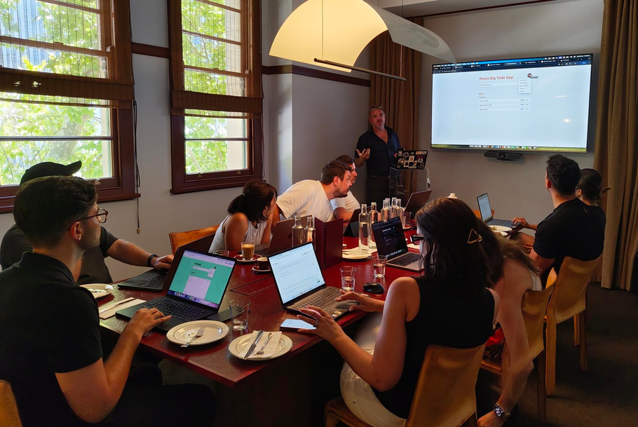

NextSteps
Workshop Format & Next Steps
Other Stuff helps business leaders make sense of AI by getting them hands-on and building with it on the real work their team already does.
Prepared for: Jevon Twynham | Rocky BayOTHER STUFF
Workshop Format & Next Steps
OTHER STUFF
Make sense of AI by building with it on real work.
The workshop is designed to move participants from abstract AI discussion into hands-on use, so the learning is grounded in Rocky Bay’s actual operating context.
Speedrun Lite - Session Format
OTHER STUFF
Speedrun Lite moves from orientation, to hands-on building, to policy-aligned discussion.

Part 1 - Welcome and Orientation
OTHER STUFF
Start with a practical mental model for AI.
Participants align on session goals, what AI is, how to think about it, and how to interact with AI to get useful results.
Part 2 - Speedrun Lite
OTHER STUFF
Participants build a practical business tool themselves.
The hands-on session uses coding agents to create a useful app, such as a Kanban-style Todo app, so people learn by making something tangible.
Part 2 - Agent Extension
OTHER STUFF
The app becomes something an AI agent can work with.
After customising the app, participants see how to make it available to an agent that can be instructed to summarise a week, plan activities, or follow up tasks.
Part 3 - Review, Q&A, and Policy
OTHER STUFF
End with reflection and policy alignment.
The recommended close is a panel-style discussion including Jevon, so practical AI skills are connected back to Rocky Bay’s policy guidelines.
Next Steps
OTHER STUFF
The follow-on work turns understanding into capability.
Once the team has built a working app, the next opportunity is developing key people inside Rocky Bay to lead practical AI change over time.
Two Natural Next Steps
OTHER STUFF
Speedrun Applied
Extend the app and begin wiring agents into a simple workflow.
Marginal Gains
Develop internal AI champions through ongoing cohort-based practice.
Speedrun Applied
OTHER STUFF
Speedrun Applied is where AI starts doing work for you.
The follow-on session focuses on agents behaving over time, hand-offs, and what it looks like when AI supports or takes the lead on ongoing tasks.
Marginal Gains
OTHER STUFF
Marginal Gains develops internal AI champions.
Selected team members continue building, testing, and refining tools and workflows in the context of their real work.
Why Marginal Gains Exists
OTHER STUFF
Most businesses need space, support, and time to understand where AI fits.
The community helps leaders test what is practical, what is worth investing in, and what actually improves day-to-day operations.
How Marginal Gains Works
OTHER STUFF
A cohort learning environment built around practical experiments.
- Monthly online sessions
- In-person events
- Access to Wingman, the AI agent management system
- Members-only business software from the Product Lab
- Vibe Starter Packs for safe rapid prototyping
Small Experiments
OTHER STUFF
The focus is small improvements that compound.
Members bring real questions and problems each month, share results and learnings, and gradually build confidence in where AI genuinely helps.
What Members Gain
OTHER STUFF
Members gain shared discovery instead of isolated trial and error.
- A safe space to learn without needing to be technical
- Practical examples from businesses like their own
- A clearer mental model for how work could evolve
- Access to one-on-one coaching and consulting on request
A Combined Pathway
OTHER STUFF
Onboard 10 key personnel into Marginal Gains.
The recommended cohort spans leadership and IT roles, giving Rocky Bay internal AI champions with ongoing access to sessions, events, resources, and shared learning.
Quote
OTHER STUFF
Rocky Bay
Attn: Jevon Twynham
Quote No. 00120
12 Feb 2026
$61,440 Marginal Gains membership plus $5,000 Half Day Speedrun Applied Workshop.
Speedrun Applied included free when annual membership is paid upfront.
Both options include
10 seats in Marginal Gains, monthly in-person events, ongoing online resources and support, members-only software, starter packs for rapid prototyping, and consulting advisory arrangements on request.
Pricing valid for Rocky Bay up to March 10, 2026.
1 / 17